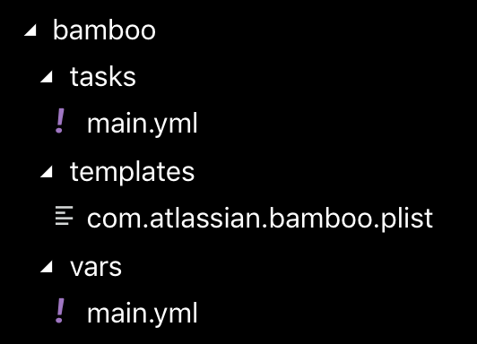
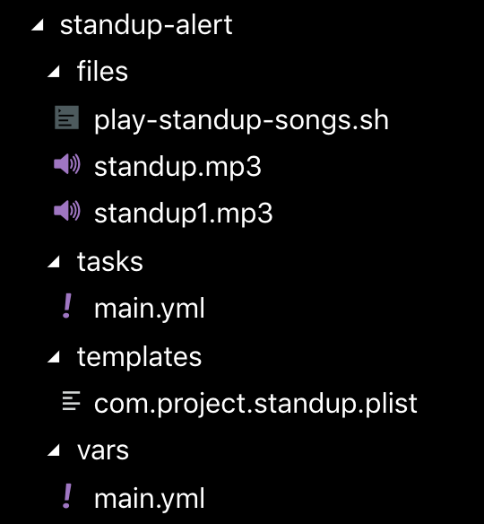

Introduction
In MacOS, launchd and launchctl are equivalent tools of systemd and systemctl in Linux. Basically launchd manages (start/stop/restart) daemons, applications and processes in MacOS. There are already several excellent tutorials online on launchd, for example:
so I’m not going to go through its concepts again. Instead this post is going to share 2 scenarios where I use launchd in my current actual project.
Manage Bamboo CI Agent
In my current project, we use Bamboo from Atlassian as our CI server. We have a physical iMac where we setup 2 remote Bamboo agents to build our ios/android applications. From time to time, the agents died (due to various reasons such as process out of memory, etc) and we only realized that when the builds were scheduled for a long time but not picked up by the agents. A quick workaround that we thought of is to use launchd to automatically restart the agents when they die (of course we also created a card to inspect the real reason why the agents died).
Bamboo Online Knowledge Base already has a post on setting up this at https://confluence.atlassian.com/bamkb/configuring-bamboo-to-start-automatically-on-startup-on-mac-os-x-302812729.html so the setup is quite straightforward for us. But to make the updating/maintaining of launchd configuration easier/repeatable in the future, we created a Bamboo playbook/role just for this purpose. Here’s the structure of the Bamboo agent role:

vars/main.yml only defines single variable bamboo_home which is the location of the Bamboo working directory at the remote machine.
|
|
templates/com.atlassian.bamboo.plist is the launchd plist file to describe the job that we want to run.
|
|
This is an Ansible template file so that we can substitute some information on bamboo_home, agent_name (since the same role can be used to run multiple agents, we need agent_name to differentiate between agents. This variable is passed in when the role is applied in the playbook). Most of the keys are self-explanatory, only 2 things that are important to remember:
- We use zsh to execute the entrypoint command for Bamboo agent since we want the agent process to inherit some of the settings/environment variables set in
.zshrc(.e.g.PATH). Admittedly this is not very nice since it makes Bamboo agent process to be dependent on the content of.zshrcat the time of starting up. To make it more reliable, we can set all the environment variables that we need in this plist file before running the Bamboo agent entrypoint command but that can be a maintenance headache in the future. So for now we are still ok with using.zshrc. - We explicitly set
LC_CTYPEvariable toUTF-8here to make sure Bamboo agent is able to display Unicode characters properly. Before moving tolaunchd, we just started the agents manually in iTerm and apparently iTerm setups this variable correctly for you. This caused us quite a bit of trouble at the beginning.
Lastly is the tasks/main.yml which defines the tasks to run:
|
|
First, it checks whether the plist file exists at target location. There’s 1 plist file for each agent. If plist file exists, it will try to unload the service, copy over the new plist file and reload it.
And here’s how this Ansible role is used in the playbook:
|
|
Since we setup this mechanism, we haven’t encountered the issue of Bamboo agents die randomly again. As a side benefit, whenever the iMac is restarted, the agents are also started automatically.
Also as a note: launchd is only able to monitor and restart processes that exitted unexpectedly. It’s not able to determine whether a process hangs or is unresponsive.
Play Standup Song
Our team has standup every morning at 10AM. To alert everyone when it’s standup time, we use the same iMac above to play a short and catchy song at exactly 10AM.
In the beginning, we setup recurring calendar invite and let it run an AppleScript to turn on volume and play song when the event is reached. This is working fine but we don’t like the idea of cluttering the calendar for this purpose, so we turn to launchd to schedule this recurring task. Apparently launchd has support for recurring task scheduling with similar capability as cron (although its syntax is much more verbal and less powerful than cron syntax)
This is almost the same process like the Bamboo agent job above so we also use Ansible to setup:

The structure is the same with Bamboo agent role. One thing of interest is play-standup-songs.sh script:
|
|
This script uses AppleScript to set volume to maximum, play 1st audio file, reduce volume a little and play 2nd audio file before muting the volume
And here’s the content of plist file
|
|
Notice the StartCalendarInterval key. This is the equivalent of cron expression in launchd. StartCalendarInterval has quite a verbal way of specifying an event happening multiple days per week: 1 dict in the array for each day. Fortunately I can use Python for loop to create multiple dict in Ansible template. The ending result will look something like this:
|
|